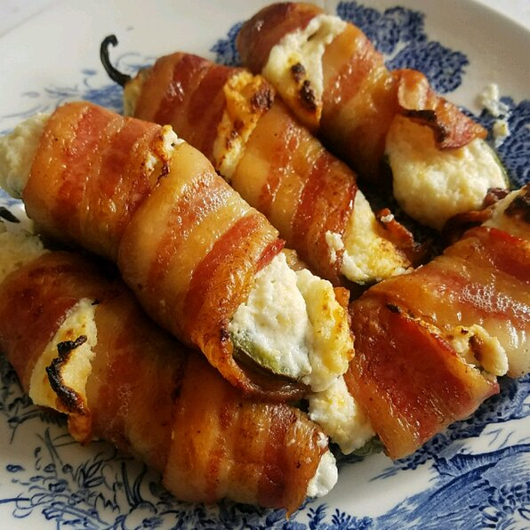

Bacon-Wrapped Jalapeno Poppers

Description
Better than the typical poppers.
Ingredients:
- ½ cup cream cheese
- ½ cup shredded sharp Cheddar cheese
- 12 jalapeno peppers, halved lengthwise, seeds and membranes removed
- 12 slices bacon
Steps:
- Step 1: Preheat oven to 400 degrees F (200 degrees C). Line a baking sheet with aluminum foil.
- Step 2: Mix cream cheese and Cheddar cheese together in a bowl until evenly blended. Fill each jalapeno half with the cheese mixture. Put halves back together and wrap each stuffed pepper with a slice of bacon. Arrange bacon-wrapped peppers on the prepared baking sheet.
- Step 3: Bake in the preheated oven until bacon is crispy, about 15 minutes.
Return to Main Page